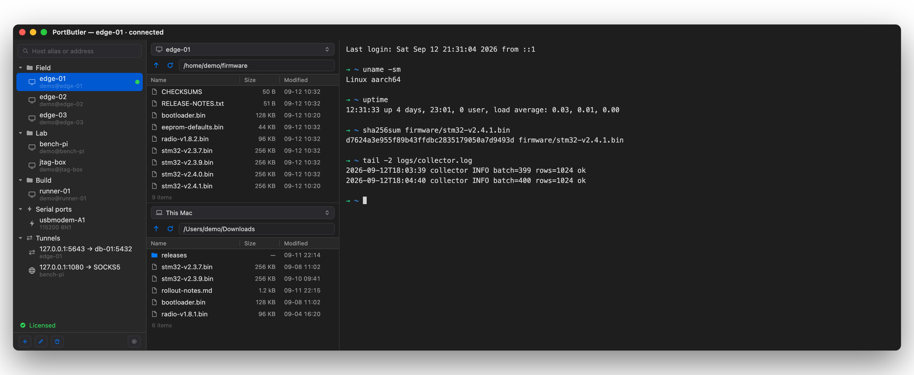
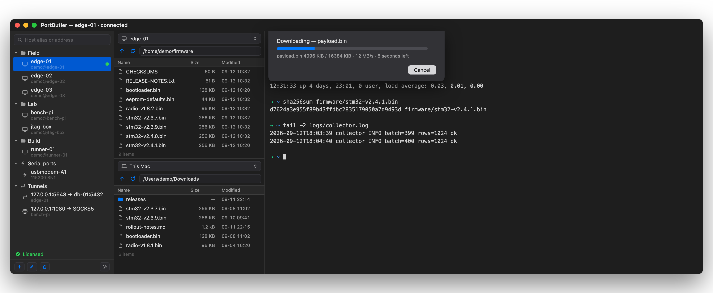
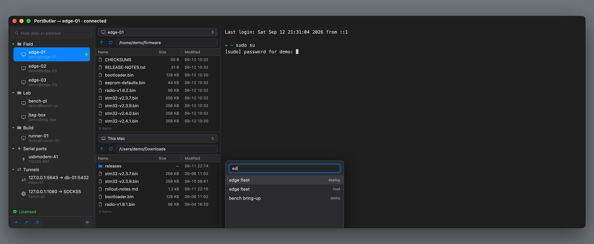

A terminal, a file manager and a serial monitor — three apps for one machine. Here a host is a tab, its files are the pane beside it, and the board on your desk sits in the same list as the servers.

connection failed is not an error message. These five look identical on most
clients and each needs a completely different fix.
| What happened | What PortButler tells you |
|---|---|
| The port refused it | The machine is up. Check the port — many devices use 2222 |
| Nothing answered | Powered off, or a firewall dropping packets silently |
| The name will not resolve | Check spelling, or whether it only exists on a VPN |
| Connected, no SSH greeting | That port is not SSH, or sshd is stuck |
| Something answered, not SSH | A web server may be sitting on that port |
Everywhere else a port forward is a checkbox on a host, so it dies when you close the terminal it was riding on. Here it is its own thing in the list, next to your servers. Open a port for the afternoon with no terminal attached.
It does not ask you for the address, the account or the key a second time — it points at a host you already saved. Change that password next month and the tunnel follows.
| State | Local port | Goes to | Open now | Moved |
|---|---|---|---|---|
| open | 5163 | workstation:5163 | 2 | 3.2 MB |
| blocked | socks 1080 | whatever connects | — | — |
Watch the last column. A tunnel that is open and idle looks exactly like one that is quietly broken — both are a green dot. Other clients show you that dot and stop there. The bytes are how you tell the difference, and they are the reason this screen exists.
scp gets 74.Same Mac, same server, same 64 MB file. The reason is not micro-optimisation — it is the
shape of the transfer. scp waits for each 32 KiB chunk to be acknowledged
before asking for the next. PortButler keeps four streams in flight and writes each
256 KiB chunk in place.
| Raspberry Pi 5 over 1GbE | Same machine (no wire limit) | |
|---|---|---|
| PortButler | 108 MB/s | 465 MB/s |
| scp | 74 MB/s | 267 MB/s |
| sftp | 74 MB/s | 267 MB/s |
The number is on screen while it runs. Megabytes per second and the time left, in the same units as the table — so you are not asked to take this page's word for it.

That 108 MB/s is 91% of the theoretical maximum of a gigabit wire. There is no room left to win on that cable, which is why the same-machine column exists. Every number here was measured on one Mac, and the method is published — BENCHMARK, in English, with the commands.
That is what an embedded rollout looks like: the same account and the same password on every unit. Save it once as a credential and type an address — the login comes from there. Change the password later and every machine follows, because they point at the credential, not a copy of it.
The list shows names and accounts. The password lives in this Mac's Keychain, is read the instant you press Return, and goes straight to the session — it is not rendered, and it never leaves this device.
Servers count failed logins. Most clients offer every key in your agent and get cut off before you are ever asked for a password. PortButler offers at most four, so an attempt is always left — and when the credential says password, it offers none.

Listed first, because you will find out anyway and it is better you find out here.
| PortButler | Where it exists | |
|---|---|---|
| Saved command snippets | Not yet | Termius, WindTerm |
| Folder transfer, resume, queue | Not yet | Transmit, ForkLift |
| Same input to many sessions | Not yet | SecureCRT, iTerm |
| Split panes | Tabs only | iTerm, WindTerm |
| Serial in the same window | Yes | No SSH client does this |
| Tunnel that outlives the terminal | Yes | Termius too |
| Live throughput on that tunnel | Yes | Nobody else shows it |
Nothing on that list is a surprise waiting for you. The first three are being built, in that order. Everything else here is what you get today, and you have fourteen days to find out whether the gaps matter for your work — before any money changes hands.
It reads ~/.ssh/known_hosts and uses ssh-agent and the keys you
already have. It imports ~/.ssh/config when you ask it to, and
never writes to that file.
When the trial ends it stops connecting — your session list stays. Major upgrades are $15. A ten-seat pack is $240.
Download and use it for fourteen days first. Nothing to enter, no card.
Something not working, or missing? Open an issue — it is read by the person who wrote the code. The app has Help → Report an Issue… too, which fills in your macOS and app version.